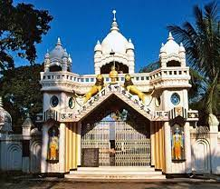
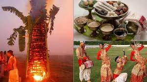

History of assam
Assam, state of India. It is located in the northeastern part of the country and is bounded to the north by the kingdom of Bhutan and the state of Arunachal Pradesh, to the east by the states of Nagaland and Manipur, to the south by the states of Mizoram and Tripura, and to the west by Bangladesh and the states of Meghalaya and West Bengal.
The name Assam is derived from the word asama, meaning “peerless” in the now extinct Ahom language. The neighbouring states of Arunachal Pradesh, Nagaland, Mizoram, and Meghalaya were once part of Assam. The capital, formerly Shillong (now the capital of Meghalaya), was shifted to Dispur, a suburb of Guwahati, in 1972. Area 30,285 square miles (78,438 square km). Pop. (2011) 31,169,272.
According to Hindu mythology, the Brahmaputra rises as the son of the god Brahma from a sacred pool known as the Brahmakund, in neighbouring Arunachal Pradesh. The river enters Assam near Sadiya in the extreme northeast and runs westward through the length of Assam for nearly 450 miles (725 km) before turning south to enter the plains of Bangladesh. Studded with low, isolated hills and ridges that rise abruptly from the plain, the valley is rarely more than 50 miles (80 km) wide and is surrounded on all sides, except on the west, by mountains
Dr. Himanta Biswa Sarma
Chief Minister Of Assam
CULTURES
The cultural life of Assam is interwoven with the activities of a number of cultural institutions and religious centres, such as the satra (seat of a religious head known as the satradhikar) and namghar (prayer hall). Satras in Assam have been looking after the religious and social well-being of the Hindu population since the 15th century.
The Assamese people observe all the pan-Indian religious festivals, but their most important celebrations are the three Bihu festivals. Originally agricultural festivals, they are observed with great enthusiasm irrespective of caste, creed, and religious affinity. The Bohag Bihu, celebrated in the spring (usually mid-April), marks the commencement of the new year (first day of the Bohag or Baishakh month). Also known as Rangoli Bihu (from rang, meaning merrymaking and fun), it is accompanied by much dancing and singing.
The Magh Bihu, celebrated in mid-January (in the month of Magh), is a harvest festival. Known also as Bhogali Bihu (from bhog, meaning enjoyment and feasting), it is a time of community feasts and bonfires. The third Bihu festival, the Kati Bihu (in mid-October or November), is also called the Kangali Bihu (from kangali, meaning poor), because by this time of year the house of an ordinary family is without food grains, as the stock is usually consumed before the next harvest.

Assam: Palace
Ahom palace at Gargaon, near present-day Sibsagar (Sivasagar), Assam, northeastern India.
FAMOUS PLACES:
Kaziranga National Park


FESTIVLAS
The colourful heritage and rich culture of Assam are reflected in the different types of festivities and celebrations that take place within its borders. The festivals and fairs that are celebrated in the largest Northeastern state are entertaining, engaging, vibrant and nothing less than a spectacular experience.
- Bihu Festival
The most significant and important of all the cultural and vibrant celebrations in Assam is the Bihu festival. Comprising of Rongali, Magh, and Kati Bihu
- Ambubachi Festival
Hosted in the Kamakhya Devi temple in Guwahati, the Ambubachi Mela is organised during the monsoon season, every year. The festival, organized for a span of four days, brings out the Tantric culture practised in many parts of Assam.
- Majuli Festival
Adored by anyone who has been a part of this festival, the festival of Majuli is considered to be one of the most pleasing and beautiful festivals of Assam. Shaped by the mighty Brahmaputra, the Majuli Island rests in the arms of the vivacious river.
- Dehing Patkai Festival
The joyful celebrations of Dehing Patkai, adds charm to the already bewitching beauty of Assam. Held during the month of January, in the district of Tinsukia, the festival is organized by the Government of Assam itself.
- Tea Festival
Ranked second worldwide for its production of teas, Assam celebrates the festival to glorify their authentic and tasteful tea production.
- Ras Lila in Majuli
This festival is a celebration of the life of Lord Krishna. The people of Majuli are ardent devotees of Lord Krishna.
- Karam Puja
A sacred festival for the tea growing tribal communities of Assam, the Karam Puja is celebrated to propitiate the favour of mother nature.
- Baishagu Festival
Celebrated by the Bodo Kacharis of Assam, the Baishagu festival marks the beginning of the new year. It is observed in the month of Bohag (April) of the Assamese calendar.